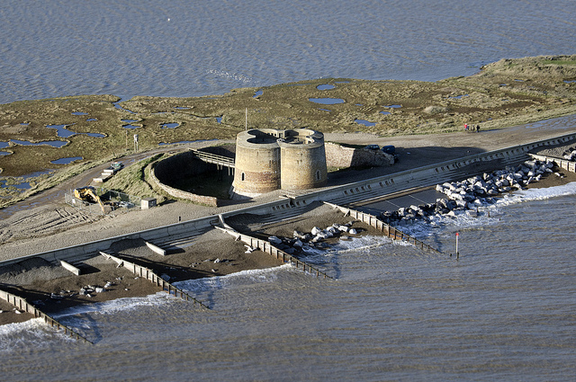

The Wish Tower is a well-known and loved landmark on the seafront that can be seen in many paintings and drawings from its earliest era to photography in the present day. The accessibility of the tower means that a wide variety of people can appreciate the part that Eastbourne as a whole played in coastal defence over 200 years ago.
The Wish Tower is one of 103 gun towers built on the coast of England, and one of 74 other Martello towers built on the south coast between Folkestone and Seaford. These towers were numbered, and after multiple numbering changes the towers were numbered from the Folkestone end and the Wish Tower in Eastbourne became Martello Tower Number 73.
There were also 29 other towers added later, in Suffolk and Essex, but these were given letters instead of numbers. Of the 103 originally built, only 43 remain, yet only two remain in public hands and largely unspoiled - The Dymchurch Tower (owned by English Heritage) and the Wish Tower.
Napoleonic Defence
In the late 18th and Early 19th centuries, the coast from Eastbourne eastwards along Pevensey Bay was heavily defended against potential invasion from continental Europe. In 1794 an incident took place in the French revolutionary wars known as the seige of San Fiorenzo. In this incident, the tower at the Mortella point was proving a great defensive manuever for France and while it was inevitably captured by British forces, it held up so well that it inspired the British to build a series of towers during the Napoleonic wars - these towers are estimated to have been built between 1805-1810.
The most likely explanation for the name of the towers along the English coast being the Martello towers is a simple mispronounciation of Mortella. There is, however, another possibility; similar twoers in Italy were called "Torri Di Martello", with "martello" meaning "hammer" in Italian. The name came from the striking of the tower bell with a hammer when the alarm was raised.
The Wish Tower began construction in early 1806/ late 1807. Construction had finished by 1810, and from 1812-1860 the tower was used as a coastguard station. This was not a search and rescue organization as it is now, it was a defensive guard whose primary job was to prevent smuggling. The tower was eventually decommissioned in 1873 by the War Office as the immediate danger of invasion had passed - the defensive strength of the Martello towers was never tested, and they were rendered obsolete for military use afterwards as a result of technological advances in heavy artillery.
They did strengthen the British defence against Napoleon's 130,000 troops who were looking to invade Britian - crucially, any invasion fleet would need to land on flat, open beaches. This meant the most vulnerable areas included the south east coast between Folkestone and Beachy Head, hence the need for the Towers. 17 towers were built between Pevensey Bay and Eastbourne, and although the Wish Tower is about a mile away from the Redoubt Fortress (there are three of these, the others being in Dymchurch and Harwich, which acted as both forts and depots for supplying the Martello Towers with provisions), the others are built closer together for mutual protection.
The Martello Towers were designed to take a single 24-pounder gun on the roof, which would traverse through 360 degress, meaning they could fire both inland and out towards sea. They are also designed to accommodate 24 men and one officer in the middle floor of the Tower. Although they never saw military use, smuggling was a major issue at the time, so from 1808 to 1812 the Tower was manned by the East Sussex Volunteer Corps, as well as the Coastguard.
New Towers in Essex
A second set of 29 towers was commissioned to be built from St Osyth in Essex to Aldeburgh in Suffolk. Instead of being numbered, they were designated with letters, A-Z and then AA, BB and CC for the last three towers. Although still based on the Martello design, they were slightly larger, with the most noticeable difference being with tower CC Aldeburgh which is of quatrefoil design and takes four 24-pounder guns (pictured below)
Photo by John Fielding is licensed under CC BY 2.0
Renewed Danger
In April 1824 a Blockade-man died near the Wish Tower as he fell off the cliff in thick fog, and in 1833 there was a battle between smugglers and the Coastguard, resulting in the death of one officer and injuries to a further three. However, smugglers were not the only problem - by 1830, there were heightened fears of another French invasion. This resulted in armament upgrades, with 32-pounder guns installed which could fire further than their 24-pounder predecessors. Modern munitions still proved the strength of the Martello design; in 1861, three guns - an 82-pounder, a 40-pounder and a 7-inch Howitzer were tested on Tower 71, fired from St Anthony's Hill, where tower 68 was mounted. Although tower 71 suffered severe damage, it took a total of 72 shots to destroy the central pillar.
Pre-World War 2 changes
After its decomissioning, the tower was leased to Eastbourne Borough Council in 1874, although in 1897 it was sold to the Duke of Devonshire for £675. From 1884-1930 it was used as a geological museum, with the collection also included stuffed animals, weapons and pictures.
World War 2
During the Second World War, a gun battery was installed on the tower as many of the surviving Martello Towers were once again used for defending the coastline. The Wish Tower housed a two storey Observation Post, and a First Aid Post was installed in what is now the public toilets next to the site; troops were also housed at the nearby Lansdowne Hotel. Although never used to attack enemy ships, the Tower was the site of regular training exercises featuring the Home Guard and the regular army.
Post-war uses and changes
During the 1950s a local campaign to save the tower from imminent demolition led to it being designated as a Scheduled Ancient Monumnet (a title it retains to this day) and it is Grade II listed.
The Wish Tower Cafe was built in 1960 and ten years later the tower was restored and used as a military museum. In 1990 the 68-pound cannon placed inside the moat was moved to the Redoubt, where it remains in place today.
From 1995-2001 the tower was used as a puppets museum, and evidence of this usage can still be seen inside the tower today.
From 2001-2013 it was used by the Council as a storeroom, sadly it suffered and was not used, meaning people could not appreciate its historical significance during this period of time.
In 2014, it was reopened by the Wish Tower Friends, a group of volunteers who dedicate their time to help the conservation effort and provide tours for visitors.
Sources: Wish Tower Conservation and Management Plan (Wish Tower Friends, ExtraVerte Community Projects), wishtower.org.uk, Historic England List Entry, Wish Tower Friends